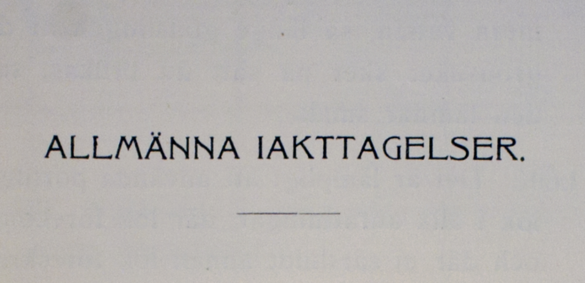
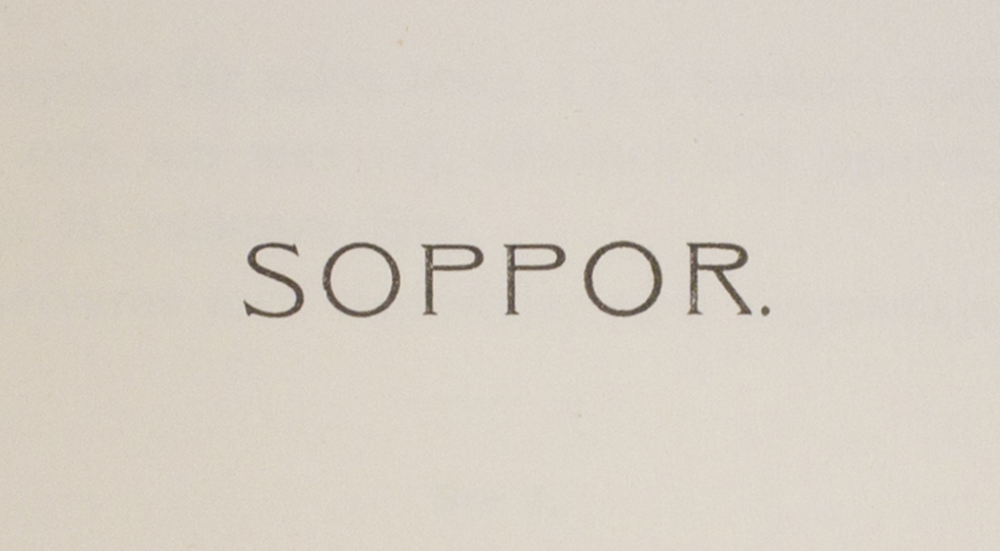
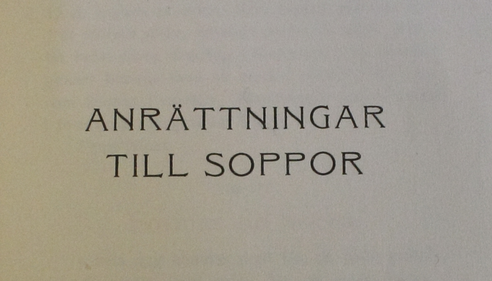
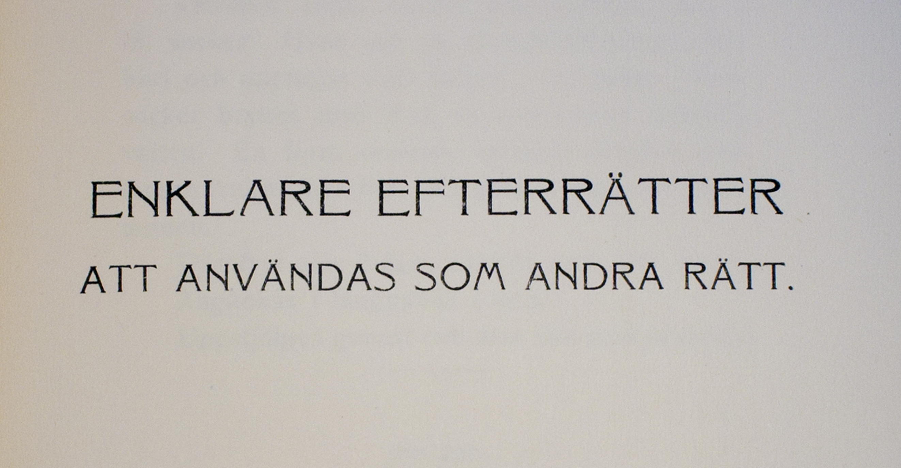
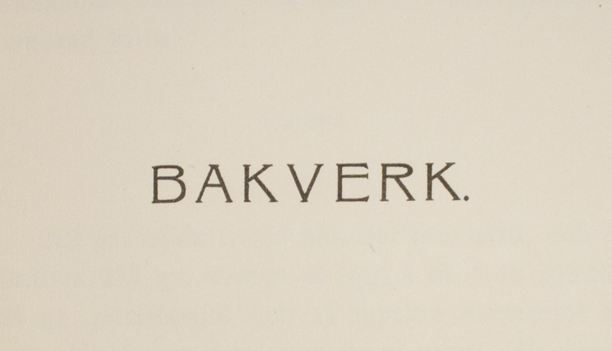
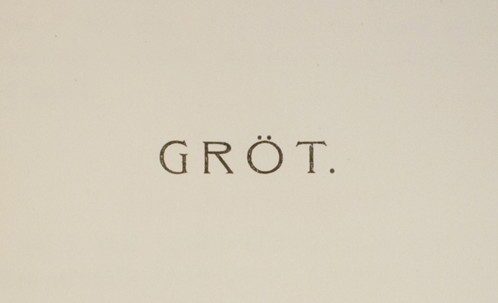
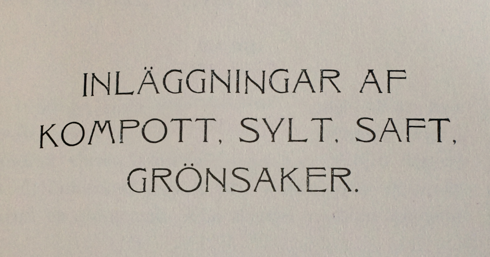
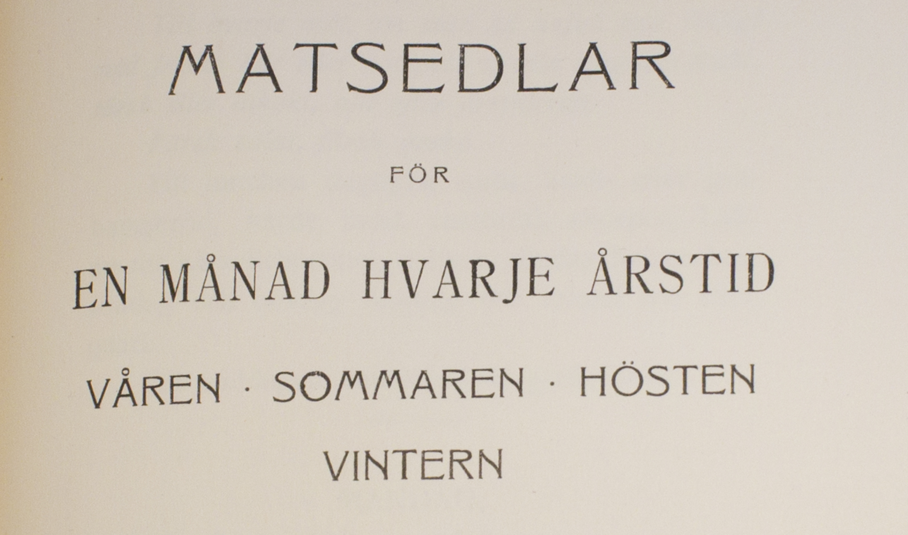
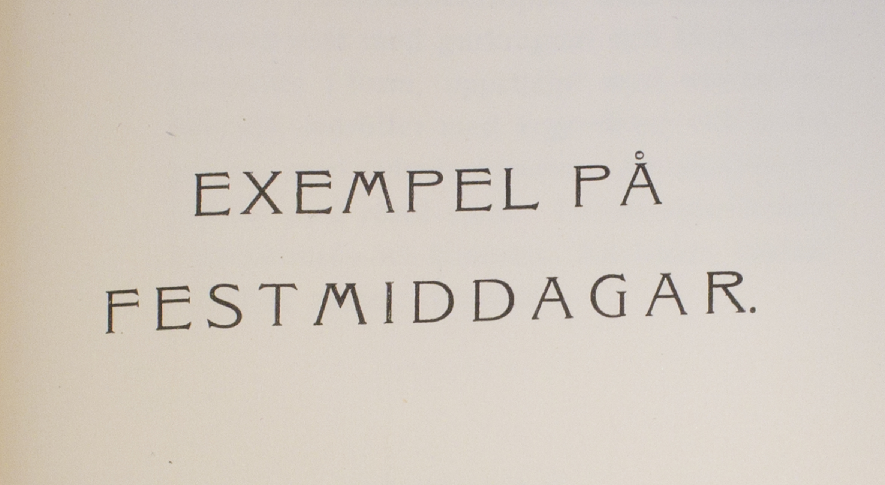
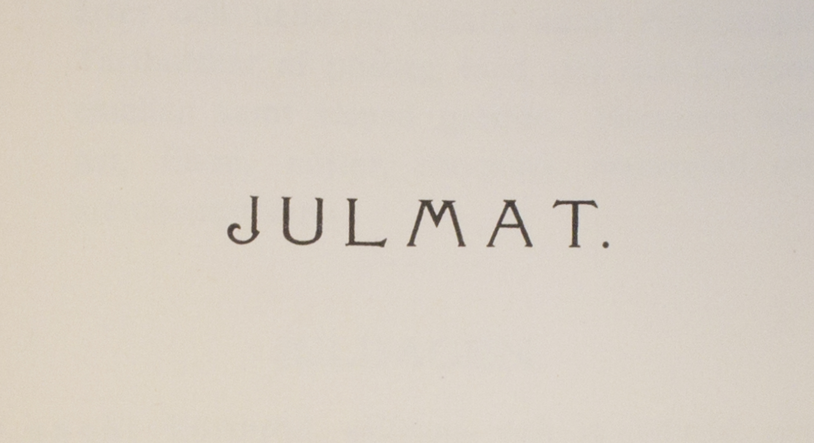

Ellen Askers Vegetariska Kokbok
Läs utdrag genom att klicka på bilderna
Ladda ned XML-kod
Ladda ned bilder i PDF

Allmänna iakttagelser

Soppor

Anrättningar till soppor

Hufvudrätter och mellanrätter

Såser

Enklare efterrätter som andra rätt

Bakverk

Gröt

Inläggningar af kompott m.m.

Matsedlar för en månad

Exempel på festmiddagar

Julmat